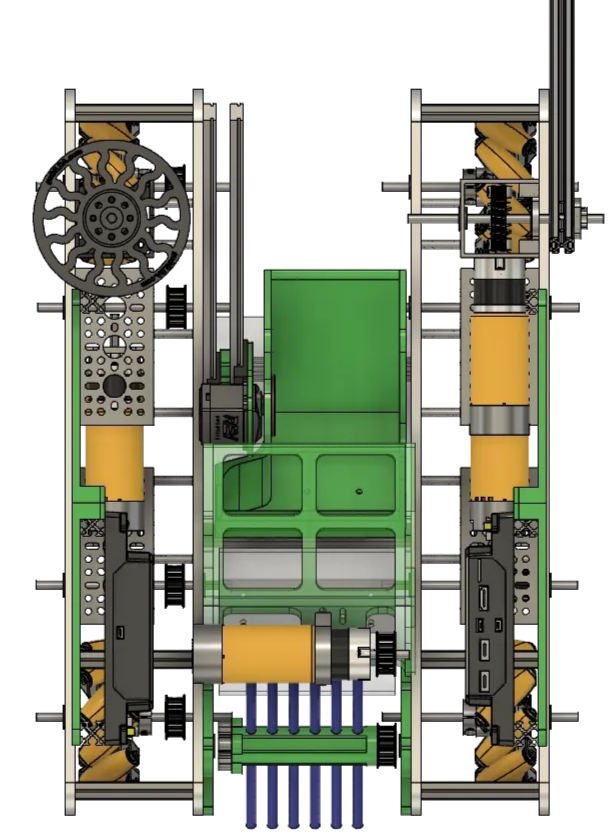
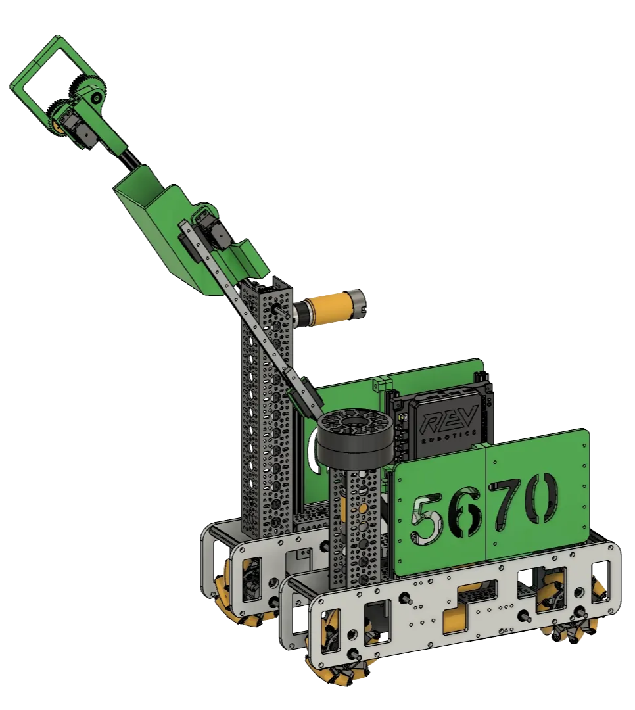

Robot Overview


Drivetrain
Reaching out to a local machine shop, we built a custom chassis out of Aluminum 6061, enclosing the motors and driving gears on the sides to minimize space for other components. High-RPM motors on a 3:1 gear reduction were attached to a belt drive for fast, reliable movement.
Intake
The intake system used a brush with flexible hose tubing to pick up game elements from the floor. The deformability of the tubes allowed elements to be pushed up a ramp and channeled into the lift. An infrared sensor automated the collection process.


Lift
A set of precision linear slides on a cascaded pulley system, mounted at a slight angle to reach goal height. A high-torque motor raised game elements to scoring height in a fraction of a second.
Back-to-Back UIL State Champions